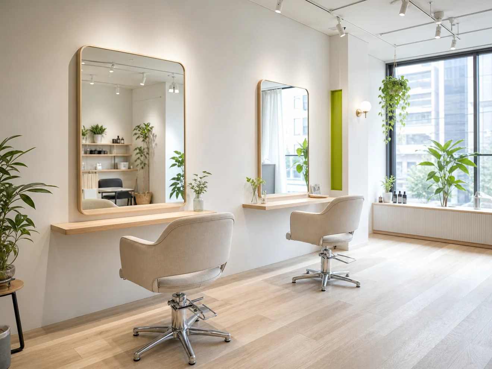
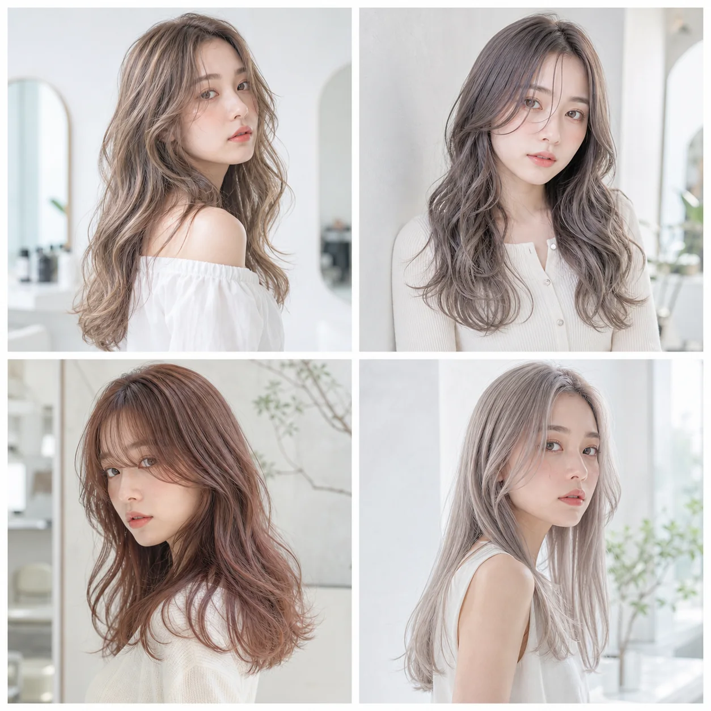

1. ファーストビューで予約導線を見せる
スマホで開いたときに、店名、何のサロンか、予約ボタンがすぐ分かるようにしました。装飾よりも行動を優先しています。
Fictional case study
バレイヤージュ特化サロンを想定し、初めての不安、料金、スタイル、アクセスをスマホで確認しやすく設計しました。
美容室サイトでは、写真の雰囲気だけで予約は決まりません。初めての人が見たいのは、料金、施術時間、自分に似合うか、派手になりすぎないか、駅から迷わず行けるかです。
DESIGN
スマホで開いたときに、店名、何のサロンか、予約ボタンがすぐ分かるようにしました。装飾よりも行動を優先しています。
ブリーチ、時間、派手さ、髪の状態など、予約前に止まりやすい疑問を先に答えています。
メニューを並べすぎると選びにくくなります。初回、人気、メンテナンスの3つに分けました。
透明感のあるヘア写真と明るい店内写真で、若い女性が相談しやすい雰囲気に寄せています。
SCREEN
長いページでも迷わないように、見出し、CTA、余白のリズムを揃えています。


写真、料金、予約導線、FAQまで整理して、スマホで見やすいページにします。